Analyzing forest fires data by visualizations in R
This is a short preliminary data analysis document exploring the relation between forest fires occurred and various temporal and environmental variables based on which one can get an idea to further investigate the causes of forest fires in portugal.
Get the data here.
0.1 Load packages
library("readr")
library("dplyr")
library("ggplot2")
library("purrr")0.2 Import dataset
ff <- read_csv("forestfires.csv")## Parsed with column specification:
## cols(
## X = col_double(),
## Y = col_double(),
## month = col_character(),
## day = col_character(),
## FFMC = col_double(),
## DMC = col_double(),
## DC = col_double(),
## ISI = col_double(),
## temp = col_double(),
## RH = col_double(),
## wind = col_double(),
## rain = col_double(),
## area = col_double()
## )head(ff)## # A tibble: 6 x 13
## X Y month day FFMC DMC DC ISI temp RH wind rain
## <dbl> <dbl> <chr> <chr> <dbl> <dbl> <dbl> <dbl> <dbl> <dbl> <dbl> <dbl>
## 1 7 5 mar fri 86.2 26.2 94.3 5.1 8.2 51 6.7 0
## 2 7 4 oct tue 90.6 35.4 669. 6.7 18 33 0.9 0
## 3 7 4 oct sat 90.6 43.7 687. 6.7 14.6 33 1.3 0
## 4 8 6 mar fri 91.7 33.3 77.5 9 8.3 97 4 0.2
## 5 8 6 mar sun 89.3 51.3 102. 9.6 11.4 99 1.8 0
## 6 8 6 aug sun 92.3 85.3 488 14.7 22.2 29 5.4 0
## # ... with 1 more variable: area <dbl>0.3 Questions to answer:
- During which months are forest fires most common?
- On which days of the week are forest fires most common?
- What are the causes of forest fires?
0.3.1 Number of forest fires by month
fireinmonths <- ff %>%
group_by(month) %>%
summarize(count = n())ggplot(fireinmonths) +
aes(x = month, y = count) +
geom_bar(stat = "identity") +
labs(title = "Number of fires occurred in each month", x = "Month", y = "Number fires") +
theme(panel.background = element_rect(fill = "white"))
0.3.2 Number of forest fires by a week-day
fireindays <- ff %>%
group_by(day) %>%
summarize(count_weekday = n())ggplot(fireindays) +
aes(x = day, y = count_weekday) +
geom_bar(stat = "identity") +
labs(title = "Number of fires occurred by each day", x = "Day of the week", y = "Number of fires") +
theme(panel.background = element_rect(fill = "white"))0.4 Re-ordering months for easier readability
ff <- ff %>%
mutate(month = factor(month, c("jan", "feb", "mar", "apr", "may", "jun", "jul", "aug", "sep", "oct", "nov", "dec"))) %>%
mutate(day = factor(day, c("mon", "tue", "wed", "thu", "fri", "sat", "sun")))factor method helps us in showcasing variables as per out convenience. For example, here it is easy to read data in chronological order for months and even week days.
0.5 Plots after using factor
0.5.1 Number of forest fires by month:
fireinmonths <- ff %>%
group_by(month) %>%
summarize(count = n())ggplot(fireinmonths) +
aes(x = month, y = count) +
geom_bar(stat = "identity") +
labs(title = "Number of fires occurred in each month", x = "Month", y = "Number fires") +
theme(panel.background = element_rect(fill = "white"))0.5.2 Number of forest fires in different weekdays:
fireindays <- ff %>%
group_by(day) %>%
summarize(count_weekday = n())ggplot(fireindays) +
aes(x = day, y = count_weekday) +
geom_bar(stat = "identity") +
labs(title = "Number of fires occurred by each day", x = "Day of the week", y = "Number of s fires") +
theme(panel.background = element_rect(fill = "white"))0.6 What are the causes?
Let’s explore the different variables whose data is available:
FFMC - Fine Fuel Moisture Code index
DMC - Duff Moisture Code index
DC - Drought code index
ISI - Initial spread index
temp - Temperature in degrees Celsius
RH - Relative Humidity
wind - Wind speed (km/h)
rain - Outside Rain (mm/m2)
For details about understanding what the variable indicated, visit FWI Information site.
Let’s plot some box plots to start with:
0.6.1 Box plots of independent var. by month
create_box_by_month <- function(x, y) {
ggplot(ff) +
aes_string(x, y) +
geom_boxplot()
}
x_var <- c("month")
y_var <- c("FFMC", "DMC","DC", "ISI", "temp", "RH", "wind", "rain")
map2(x_var, y_var, create_box_by_month)## [[1]]##
## [[2]]##
## [[3]]##
## [[4]]##
## [[5]]##
## [[6]]##
## [[7]]##
## [[8]]Comment: All the variables when plotted by month show some kind of relation with the month. The temp variable shows a pattern of being higher during the summer months. We can also see that the DC variable, which stands for “drought code” and is a measure of how dry conditions are, is high during the late summer months.
0.6.2 Box Plots of independent var. by week day
create_box_by_day <- function(x, y) {
ggplot(ff) +
aes_string(x, y) +
geom_boxplot()
}
X_var <- c("day")
Y_var <- c("FFMC", "DMC","DC", "ISI", "temp", "RH", "wind", "rain")
map2(X_var, Y_var, create_box_by_day)## [[1]]
##
## [[2]]
##
## [[3]]
##
## [[4]]
##
## [[5]]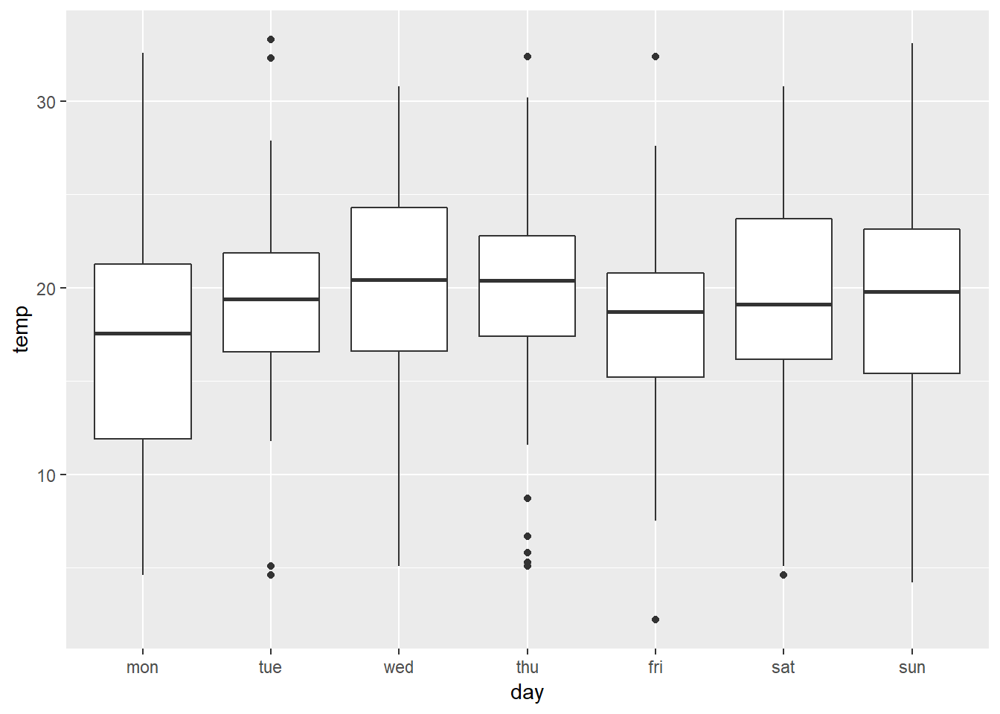
##
## [[6]]
##
## [[7]]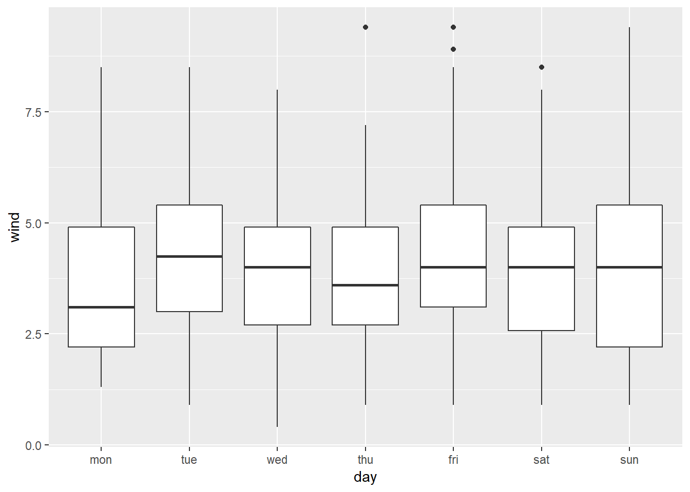
##
## [[8]]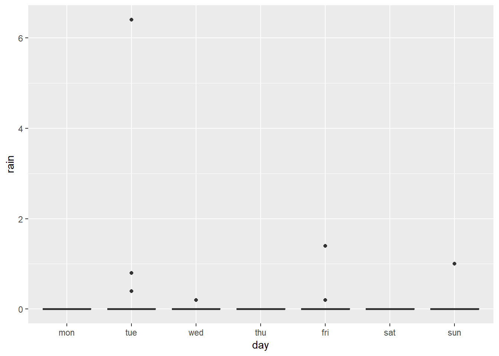
Comment: It’s clear from looking at the solid black lines in the centers of the box plots that medians for each variable seem to be quite consistent across days of the week. The size of the boxes are also consistent across days, suggesting that the ranges of data values are similar.
The number of outlier points and the length of the box whiskers representing high and low points vary from day to day. However, there do not seem to be any patterns that suggest that the variables differ by day of the week, despite the fact that the number of forest fires appears to be higher on weekends.
Though week day plots didn’t reveal anything interesting, month-wise box plots got some information which looks quite relevant and the variables which revealed such differences might be capable of explaining why there are such differences in a further investigation.
0.6.3 Which variables are related to forest fire severity?
How is forest fire severity measured?
In our dataset, area is the variable which helps us measure the fire severity.
create_scatter <- function(x,y){
ggplot(data = ff) +
aes_string(x,y) +
geom_point()
}
Y_scat <- c("area")
X_scat <- c("FFMC", "DMC","DC", "ISI", "temp", "RH", "wind", "rain")
map2(X_scat, Y_scat, create_scatter)## [[1]]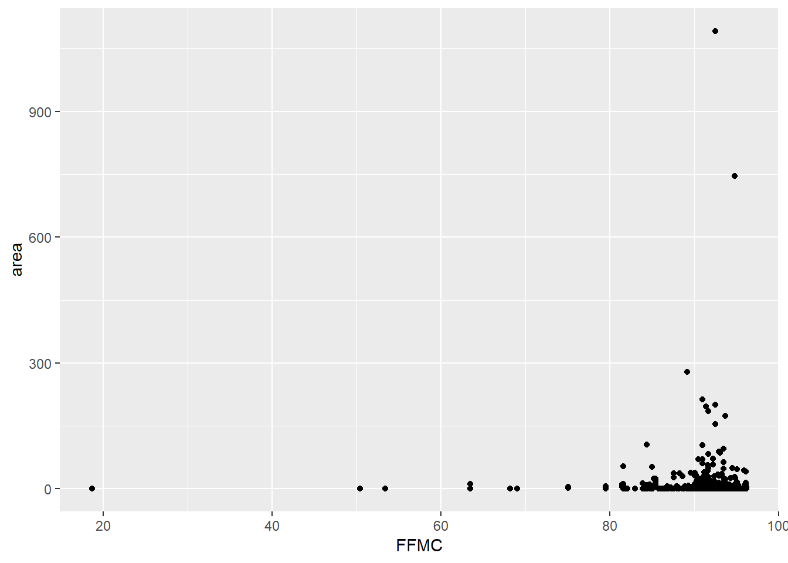
##
## [[2]]
##
## [[3]]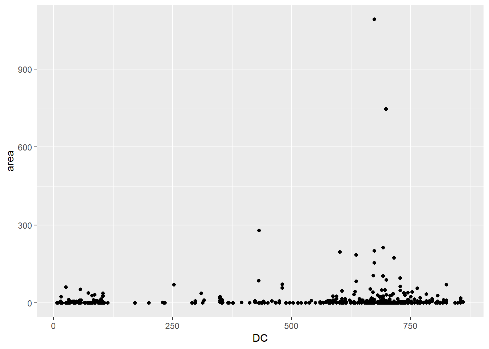
##
## [[4]]
##
## [[5]]
##
## [[6]]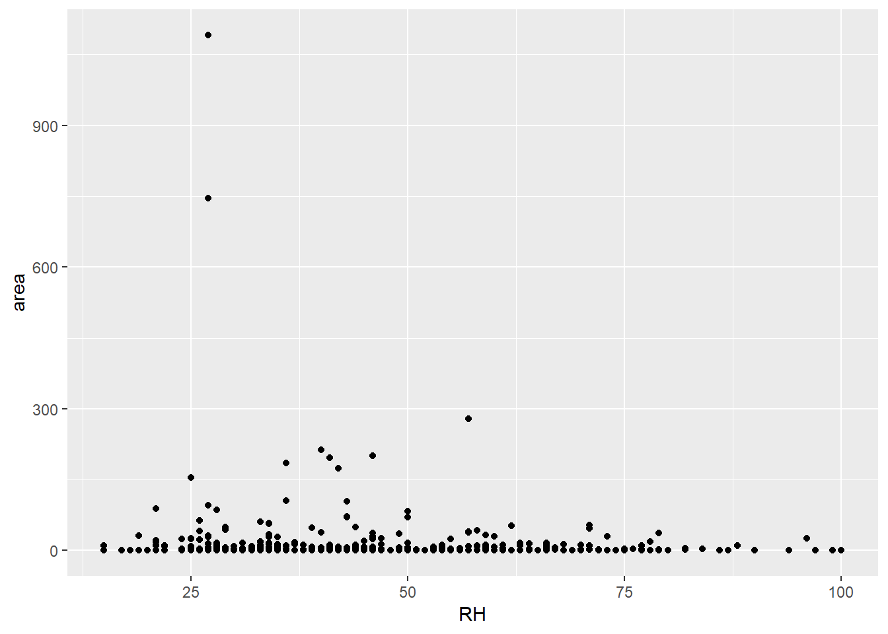
##
## [[7]]
##
## [[8]]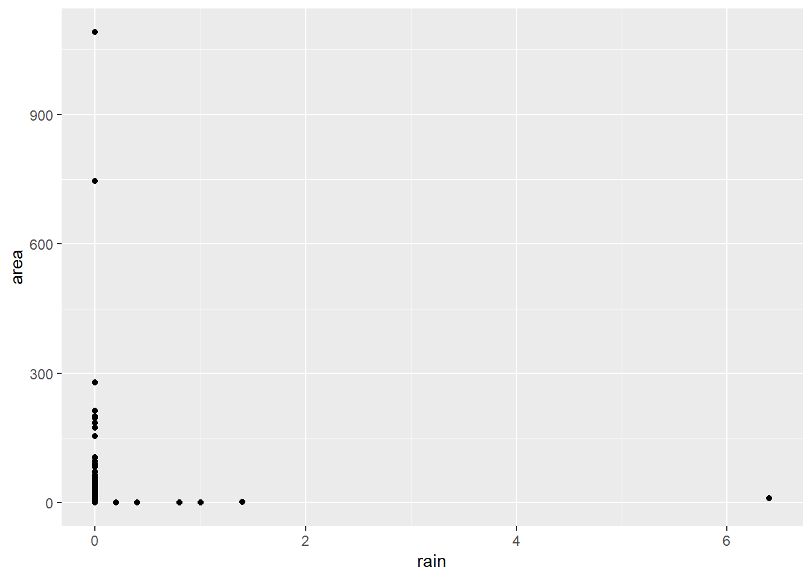
It seems most of the data points are in the lower part of all the area plots.
Let’s plot a histogram quickly:
ggplot(ff)+
aes(area) +
geom_histogram(bins = 20)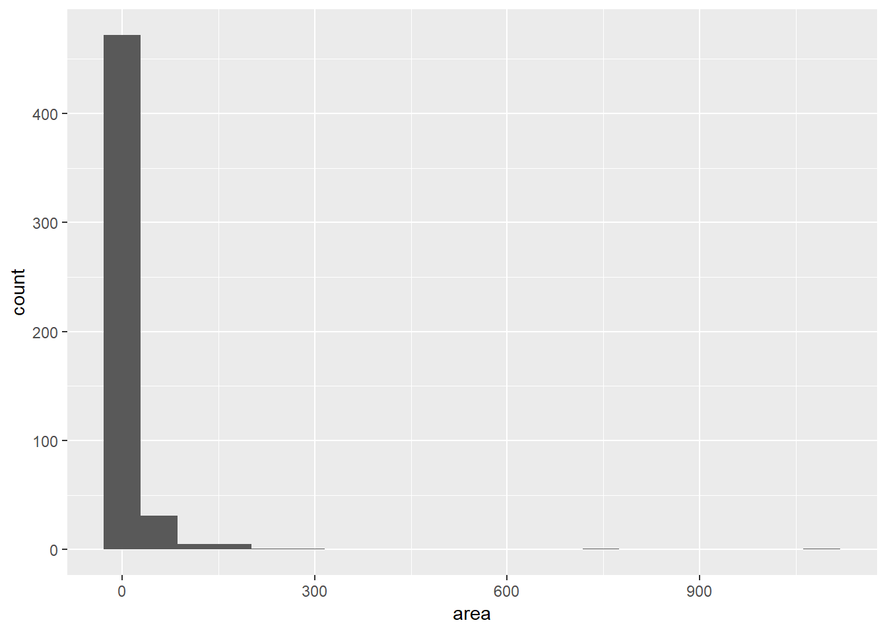
The above histogram tells that the burnt area concentration is below 500 ha per each entry in the dataset. It is also evident that most number of points are focused towards a lower area which is less than 50 ha. As most of the area points are in the lower part of the plots, let’s filter out data and plot the same scatter plots for a fewer number of data points.
Area filters:
area_is_zero <- ff %>%
filter(area == 0)
area_without_outliers <- ff %>%
filter(area > 0 & area < 400)
area_0_and_50 <- ff %>%
filter(area > 0 & area <= 50)0.6.4 Plotting area burnt between 0 ha and 50 ha
create_scatter <- function(x,y){
ggplot(data = area_0_and_50) +
aes_string(x,y) +
geom_point()
}
Y_scat <- c("area")
X_scat <- c("FFMC", "DMC","DC", "ISI", "temp", "RH", "wind", "rain")
map2(X_scat, Y_scat, create_scatter)## [[1]]
##
## [[2]]
##
## [[3]]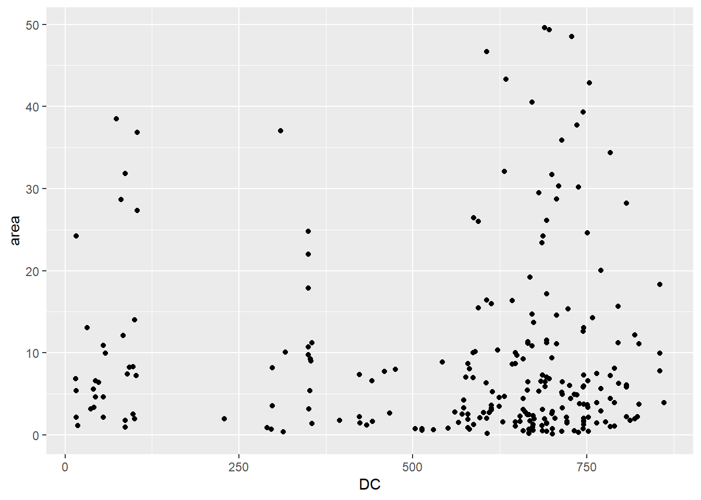
##
## [[4]]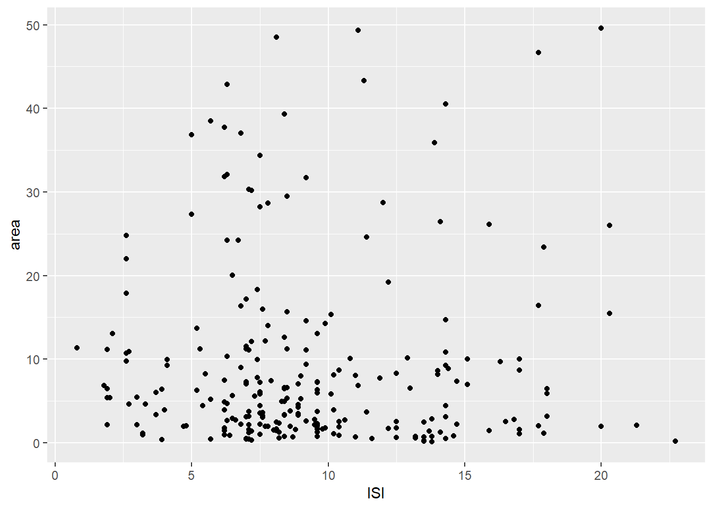
##
## [[5]]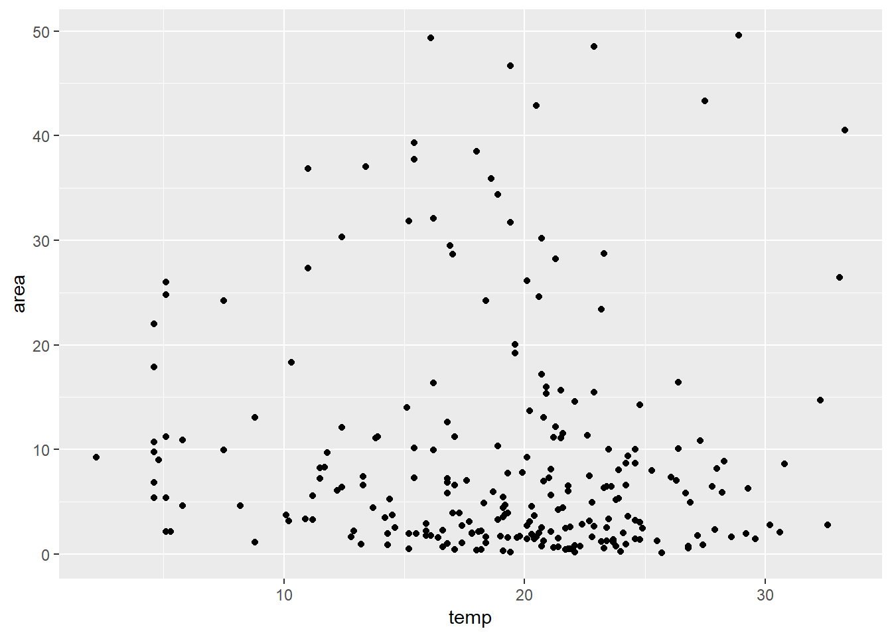
##
## [[6]]
##
## [[7]]
##
## [[8]]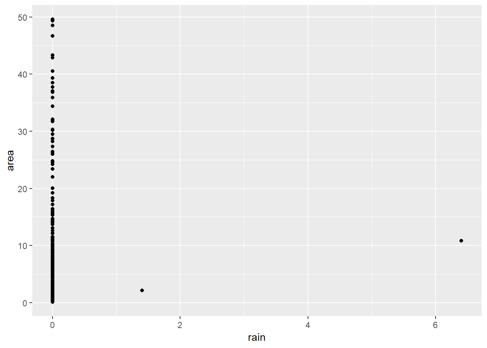
Comment: With no clear patterns after plotting without outliers and removing zero area values separately, plotting for the area in the range [0,50] shows FFMC has a positive trend with area. The plot of rain and area shows that there was no rain when any amount of area occurred, which is a trivial insight. No other variables show any noticeable relation with area.
This ends the data exploration and suggests to verify the insights derived from a statistical standpoint so that the happenings can be explained with reason and may be utilized to predict the occurence of forest fires.